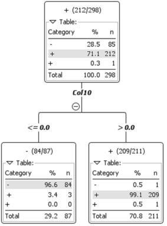

In classification, we're trying to assign objects given as inputs to a certain class. Classification is usually a supervised learning task. This means that given training examples it can create a model to predict future inputs. The strength of supervised learning is that once the model is created, it can quickly classify things. Unfortunately, generating the model is time intensive and requires enough examples that it isn't undertrained, and diverse enough examples that it isn't overfit to the examples.
Decision Trees ask questions that splits the data. Usually, a specific metric is used to determine how good the split is, based on how well the data is divided. Once the data is divided, each branch continues asking good questions until the split is good enough. Good enough is based on some arbitrary percent of the data that falls into one class. This prevents the tree from growing excessively long, and overfitting the data. Decision trees can easily suffer from overfitting and underfitting. Shown below is a short decision tree.
Rule based classifiers compare the object to rules in order, and as soon as a rule is found to be true, the object is assigned to the corresponding class. While at first this might seem similar to decision trees, rules can be made up of multiple questions. One might think of each path from root to leaf of a decision tree as a single rule in a rule based classifier. Like decision trees, rule based classifiers can easily suffer from overfitting and underfitting. Underfitting will occur if the questions are too general, while overfitting will occur if the questions are too broad. The main advantage is that these classifiers are extremely easy.
Nearest neighbor classifiers are extremely simple. It is also one of the few unsupervised learning algorithms in the classification task. It doesn't require any training, just previously classified data. When a new object arrives, the nearest neighbor (or several neighbors) is taken and the new object is given the same classification as it/them, or the majority if there's a difference of opinion. While NN algorithms are extremely simple, they can suffer if the classes aren't in globular groups. For example, in the image below the black dot might be classified as red or blue depending on how many neighbors the algorithm is taking into account.
Bayesian classifiers are statistical models of classification. Using the attributes of the data object it compares it to each class, or items in that class, and determines a percentage certainty that the object belongs to that class. It can then pick the highest probability, or if multiple classes are allowed it can pick all of the classes with a probability above some threshold can be assigned to the new object.
Artificial Neural Networks are an attempt to simulate the human brain's method of making decisions. Neurons fire and trigger other neurons. When neurons fire, they can fire at different intensities. In an ANN each simulated neuron sends it's input multiplied by a different weight to each neuron in the next layer. When training an ANN, back propagation is used to modify the weights based on how much error the contributed. ANNs take a long time to train, but can be highly precise. Shown below are the classes for a simple ANN implemented in python.
import random
class Node:
def __init__(self, nextLayerSize):
self.value = 0.0
self.weights = [random.random()*2-1 for i in range(0,nextLayerSize)]
#Sets the value of the node, used when calculating the value of nodes in the next layer
def setValue(self, newV):
self.value = newV
#Returns this nodes contribution to the next layer, or it's value if there is no next layer
def getResults(self):
return [self.value*w for w in self.weights]
#Fixes the weights based on error from the next layer, a is the learning rate
#Returns the error of this node
def train(self, error, a=0.1):
if len(error) != len(self.weights):
print("Invalid length of errors.")
quit()
tempweights = [self.weights[i] + a*error[i]*self.value for i in range(0, len(self.weights))]
error = sum([self.weights[i]-tempweights[i] for i in range(0,len(self.weights))])
self.weights = tempweights
return error
import Node
class Layer:
def __init__(self, size, nextLayerSize):
self.nodes = [Node.Node(nextLayerSize) for i in range(0,size)]
self.outputSize = nextLayerSize
#Sets the values of nodes in this layer
#Called from Network with the results of the previous layer or the input to the NN
def setNodeValues(self, values):
if(len(values) != len(self.nodes)):
print("Invalid number of values.")
quit()
for i in range(0, len(self.nodes)):
self.nodes[i].setValue(values[i])
#Calculates the values for the next layer from its nodes
#Called from Network to be used as an input to the next Layer's setNodeValues or as output of the NN
def getResults(self,precision=10):
results = []
for i in range(0,self.outputSize):
sum = 0.0
for j in range(0,len(self.nodes)):
sum = sum + self.nodes[j].getResults()[i]
results.append(round(sum,precision))
return results
#Fixes the weights of each node based on the error of the next layer
#Returns the error of all nodes as a list
def train(self, error):
if(len(error) != self.outputSize):
print("Size of error list does not match expected size")
quit()
return [self.nodes[i].train(error) for i in range(0,len(self.nodes))]
import Layer, random
class Network:
def __init__(self, layerSizes):
self.layers = [ Layer.Layer(layerSizes[i], layerSizes[i+1]) for i in range(0,len(layerSizes)-1) ]
self.inputSize = layerSizes[0]
self.outputSize = layerSizes[len(layerSizes)-1]
self.trainingData = []
#Runs input values through the network and returns the output
def calculateOutputs(self, values, precision=10):
for i in range(0,len(self.layers)):
self.layers[i].setNodeValues(values)
values = self.layers[i].getResults(precision)
return values
#Adds training data to adjust weights
def addTrainingData(self, data):
if len(data) != self.inputSize + self.outputSize:
print("Training data is of the wrong size.")
quit()
self.trainingData.append(data)
#Trains based on training data added to the network
#Precision is the number of decimals to round to when checking error.
def train(self,precision=12):
sumError = 1.0
while sumError != 0.0:
sumError = 0.0
trainDup = list(self.trainingData)
while len(trainDup) > 0:
dataSet = trainDup.pop(random.randint(0,len(trainDup)-1))
inputData = dataSet[0:self.inputSize]
outputData = dataSet[self.inputSize:]
results = self.calculateOutputs(inputData,precision)
error = [outputData[i]-results[i] for i in range(0,self.outputSize)]
sumError += round(sum(error),precision)
for i in range(0,len(self.layers)):
error = self.layers[len(self.layers)-i-1].train(error)